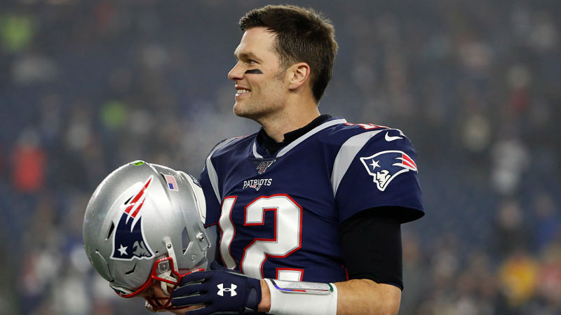

Go Back
My Hero!

Tom Brady is my hero. He was born on August 3rd, in the year 1977 in San Mateo, California. His dad's name is Tom Brady as well! His mom is naed Galynn Patricia Brady. Tom attended Junípero Serra High School and played bfootbaall baseball and basketball while he was there. He exceled at football and baseball especially. After high school he enterred the major league baseball draft and was picked by the Montreal Expos. He decided against that though because the University of Michigan recruited him for football. He enterd the NFL draft od 2000 and was drafted 199th by the New England Patriots. He won six super bowls with the Patriots and one with his new team, The Tampa Bay Buccaneers. He holds the record for most superbowls won and is sauid to be the greatest quarterback of all time.
Tom Brady is my idol because I look up to his work ethic and his spirit. I was named after Tom Brday so I grew up watching him play football and lead his team to victory. He is a leader and is a strong independent person that has a great heart and is a good dad as well. this is why I look up to Tom Brady as one of My heros.